A Dissertation Report
Submitted in partial fulfillment of the requirements for the degree of
Master of Technology
in
Computer Science and Information Technology
Submitted by
Anandakrishnan K V
Under the guidance of
Drupad M D
Department of Computer Science and IT
School of Computing
Amrita Vishwa Vidyapeetham
Kochi, Kerala, India
March 2026
This is to certify that the dissertation entitled "Resilient Routing in Wireless Mesh Networks using Digital Twin and GNN-Based Reinforcement Learning" submitted by Anandakrishnan K V in partial fulfillment of the requirements for the award of the degree of Master of Technology in Computer Science and Information Technology to the Department of Computer Science and IT, School of Computing, Amrita Vishwa Vidyapeetham, Kochi is a bonafide record of the work carried out under our supervision and guidance.
| Guide Drupad M D Department of CS & IT Amrita Vishwa Vidyapeetham |
Head of Department Department of CS & IT Amrita Vishwa Vidyapeetham |
Place: Kochi
Date: March 2026
I hereby declare that the dissertation entitled "Resilient Routing in Wireless Mesh Networks using Digital Twin and GNN-Based Reinforcement Learning" submitted to the Department of Computer Science and IT, School of Computing, Amrita Vishwa Vidyapeetham, Kochi, in partial fulfillment of the requirements for the award of the degree of Master of Technology in Computer Science and Information Technology, is a record of original work done by me under the supervision and guidance of Drupad M D, Department of Computer Science and IT, School of Computing, Amrita Vishwa Vidyapeetham, Kochi.
The results embodied in this dissertation have not been submitted to any other University or Institute for the award of any degree or diploma.
Place: Kochi
Date: March 2026
Anandakrishnan K V
I would like to express my sincere gratitude to my guide, Drupad M D, for his invaluable guidance, continuous support, and encouragement throughout the course of this research work. His insightful suggestions and constructive criticism have been instrumental in shaping this dissertation.
I am grateful to the Head of the Department of Computer Science and IT, School of Computing, Amrita Vishwa Vidyapeetham, Kochi, for providing the necessary facilities and support for this research.
I extend my thanks to all the faculty members of the Department of Computer Science and IT for their support and encouragement. I also wish to thank my fellow students for their cooperation and help during the course of this work.
I am deeply indebted to my parents and family for their unconditional love, support, and encouragement that have always been a source of strength and motivation.
Finally, I thank the Almighty for bestowing upon me the strength and perseverance to complete this work.
Anandakrishnan K V
A Wireless Mesh Network (WMN) is a communications network made up of multiple radio nodes organized in a mesh topology used for connecting dynamically with each other. Their flexibility in dynamic connectivity and multi-hop capabilities can attract major threats. Particularly, jamming attacks can severely degrade network performance by disrupting routing and data transmission. Traditional routing protocols lack the adaptability to operate effectively in such dynamic and hostile environments.
This dissertation proposes an integrated resilience framework for WMNs that combines Digital Twin modelling, Graph Attention Networks (GAT), and Multi-Agent Deep Q-Networks (DQN). A Digital Twin simulates realistic network behaviour and jamming scenarios by maintaining a virtual copy of the physical network that is continuously updated with real-time radio environment data. The Digital Twin ingests environmental radio maps containing Received Signal Strength (RSS) measurements, which are linked to link-level performance indicators including latency and bandwidth capacity. Anomaly detection and jamming analysis modules augment the network graph with additional information, constructing a seven-dimensional feature vector for each node.
A Graph Attention Network model captures the topological and traffic features by embedding the entire network topology through attention-based message passing between neighbouring nodes. The attention mechanism enables nodes to selectively focus on important neighbours based on their relevance to routing, facilitating the propagation of information about node failures and jamming attacks across the network. The output embeddings are used to estimate Q-values for routing decisions.
A multi-agent deep Q-network utilizes these embeddings to learn adaptive routing strategies under varying jamming conditions. Each of the 50 nodes in the network has its own agent with independent policy and target networks, while sharing experiences through a shared replay memory pool. The framework uses an epsilon-greedy exploration strategy with an enhanced reward function that incorporates anomaly dampening, jamming penalties, and resilience bonuses.
Experimental results demonstrate that the proposed Multi-Agent Digital Twin Graph Attention Network (MA DT-GCN) model significantly outperforms the single-agent GAT baseline across 3,000 training episodes. The MA DT-GCN achieved an average reward of −2.435 compared to the baseline's −12.452, reduced average path length from 34.71 hops to 11.01 hops, decreased average jammed steps from 2.72 to 1.15 (a 57.7% reduction), and converged 52.8% faster while maintaining a 96% success rate. These results validate the effectiveness of integrating Digital Twin information with multi-agent reinforcement learning for resilient routing in adversarial wireless mesh network environments.
Keywords: Digital Twin, Wireless Mesh Networks, Graph Attention Network, Deep Q-Network, Reinforcement Learning, Jamming Detection, Anomaly Detection, Resilient Routing, Multi-Agent Systems.
| Certificate | ii |
| Declaration | iii |
| Acknowledgement | iv |
| Abstract | v |
| List of Figures | viii |
| List of Tables | ix |
| List of Abbreviations | x |
| Chapter 1: Introduction | 1 |
| 1.1 Background | 1 |
| 1.2 Wireless Mesh Networks | 2 |
| 1.3 Challenges in WMN Routing | 3 |
| 1.4 Problem Statement | 5 |
| 1.5 Objectives | 6 |
| 1.6 Scope of the Work | 7 |
| 1.7 Organization of the Report | 8 |
| Chapter 2: Literature Review | 9 |
| 2.1 Reinforcement Learning in Network Routing | 9 |
| 2.2 Graph Neural Networks for Networking | 11 |
| 2.3 Digital Twin for Radio Environments | 14 |
| 2.4 Multi-Agent Systems in Network Optimization | 16 |
| 2.5 Gap Analysis | 17 |
| Chapter 3: System Design and Architecture | 19 |
| 3.1 System Overview | 19 |
| 3.2 Digital Twin Module | 21 |
| 3.3 Graph Attention Network | 25 |
| 3.4 Multi-Agent Deep Q-Network | 28 |
| 3.5 Reward Function Design | 31 |
| 3.6 Training Algorithm | 33 |
| Chapter 4: Implementation | 35 |
| 4.1 Technology Stack | 35 |
| 4.2 Module Architecture | 36 |
| 4.3 Data Pipeline | 38 |
| 4.4 Environment Setup | 39 |
| 4.5 Model Training Pipeline | 40 |
| Chapter 5: Experiments and Results | 42 |
| 5.1 Experimental Setup | 42 |
| 5.2 Performance Metrics | 43 |
| 5.3 Reward and Routing Stability | 44 |
| 5.4 Path Efficiency Analysis | 46 |
| 5.5 Jamming Avoidance Analysis | 47 |
| 5.6 Convergence and Training Efficiency | 48 |
| 5.7 Success Rate and Reliability | 49 |
| 5.8 Summary of Results | 50 |
| Chapter 6: Conclusion and Future Work | 52 |
| 6.1 Conclusion | 52 |
| 6.2 Future Work | 53 |
| References | 55 |
| Figure 1.1: Wireless Mesh Network topology example | 3 |
| Figure 3.1: Overall system architecture of the MA DT-GCN framework | 20 |
| Figure 3.2: Digital Twin module architecture | 22 |
| Figure 3.3: GAT attention coefficient computation | 26 |
| Figure 3.4: Enhanced reward function design | 32 |
| Figure 4.1: Module dependency architecture | 37 |
| Figure 5.1: Simulated 50-node WMN topology | 42 |
| Figure 5.2: Reward convergence comparison over 3,000 episodes | 45 |
| Figure 5.3: Path length comparison over 3,000 episodes | 46 |
| Figure 5.4: Jammed steps comparison over 3,000 episodes | 47 |
| Figure 5.5: Training time comparison | 48 |
| Figure 5.6: Success rate and PDR comparison | 49 |
| Figure 5.7: Combined comparison results summary | 51 |
| Table 2.1: Summary of related works | 18 |
| Table 3.1: Seven-dimensional node feature vector | 24 |
| Table 3.2: GAT model architecture parameters | 27 |
| Table 3.3: DQN hyperparameters | 30 |
| Table 3.4: Reward function parameters | 32 |
| Table 4.1: Technology stack | 35 |
| Table 5.1: Comparative performance metrics (3,000 episodes) | 43 |
| Table 5.2: Detailed improvement analysis | 50 |
| WMN | Wireless Mesh Network |
| DT | Digital Twin |
| GNN | Graph Neural Network |
| GAT | Graph Attention Network |
| GCN | Graph Convolutional Network |
| DQN | Deep Q-Network |
| DRL | Deep Reinforcement Learning |
| RL | Reinforcement Learning |
| MDP | Markov Decision Process |
| DDQN | Double Deep Q-Network |
| MA DT-GCN | Multi-Agent Digital Twin Graph Convolutional Network |
| RSS | Received Signal Strength |
| RSSI | Received Signal Strength Indicator |
| PDR | Packet Delivery Ratio |
| QoS | Quality of Service |
| IoT | Internet of Things |
| PyG | PyTorch Geometric |
| BRITE | Boston University Representative Internet Topology Generator |
Wireless communication networks have greatly influenced the advancement of interconnectivity of technology without a physical medium. The proliferation of wireless devices in the modern era has created an unprecedented demand for reliable, scalable, and resilient networking solutions. From industrial automation to disaster response, the need for networks that can self-organize, self-heal, and adapt to changing conditions has never been greater. However, the open nature of wireless communication channels introduces significant security challenges, particularly in the form of jamming attacks that can disrupt normal network operations.
The convergence of artificial intelligence and networking has opened new avenues for addressing these challenges. Machine learning techniques, particularly deep reinforcement learning, have demonstrated remarkable capabilities in dynamic decision-making scenarios. When combined with graph-based learning methods that can naturally represent network topologies, these techniques offer a promising path toward truly intelligent and adaptive network management.
This dissertation explores the integration of three cutting-edge technologies — Digital Twins, Graph Attention Networks, and Multi-Agent Deep Q-Networks — to create a comprehensive resilience framework for Wireless Mesh Networks. The proposed framework not only detects jamming attacks in real-time but also actively adapts routing strategies to maintain network performance under adversarial conditions.
Wireless Mesh Networks (WMNs) represent a class of wireless networks where nodes are interconnected in a mesh topology, enabling multi-hop communication. Unlike traditional point-to-point or star topology networks, WMNs offer several distinctive advantages that make them suitable for a wide range of applications.
In a WMN, each node can communicate with multiple other nodes, creating redundant paths for data transmission. This multi-hop routing capability extends the coverage area far beyond what a single wireless device can achieve. The decentralized architecture of WMNs eliminates single points of failure, as the network can automatically reroute traffic around failed or compromised nodes. This self-healing capability makes WMNs particularly valuable in scenarios where network reliability is critical.
WMNs find applications in numerous domains including:
Despite these advantages, the very characteristics that make WMNs flexible also introduce vulnerabilities. The shared wireless medium, multi-hop routing, and dynamic topology create attack surfaces that malicious actors can exploit to disrupt network operations.
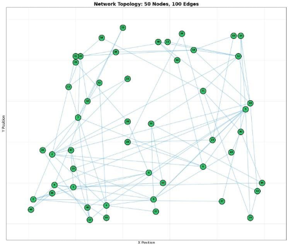
Figure 1.1: Example of a Wireless Mesh Network topology showing interconnected nodes and multi-hop routing paths
Routing in Wireless Mesh Networks presents several unique challenges that traditional routing protocols struggle to address effectively:
Jamming attacks represent one of the most severe threats to WMN operations. A jammer transmits high-power signals on the same frequency band used by the network, causing interference that degrades link quality and disrupts data transmission. Jamming can be constant, deceptive, random, or reactive, each requiring different detection and mitigation strategies. The impact of jamming extends beyond the immediately affected links — it can cause cascading failures as routing protocols attempt to route traffic through jammed areas, leading to congestion and increased latency across the entire network.
WMNs operate in dynamic environments where channel conditions, traffic loads, and network topology can change rapidly. Node mobility, varying interference levels, and fluctuating traffic patterns create a complex, non-stationary optimization problem. Traditional static routing protocols that rely on predefined rules cannot adapt quickly enough to these changes, resulting in suboptimal routing decisions and degraded performance.
As the number of nodes in a WMN increases, the routing problem becomes increasingly complex. Mathematical optimization approaches that may work well for small networks face scalability limitations when applied to larger topologies. The computational overhead of maintaining routing tables and computing optimal paths grows significantly with network size, making centralized approaches impractical for large-scale deployments.
The decentralized nature of WMNs requires routing decisions to be made distributedly, with each node making local decisions based on limited information about the global network state. Centralized routing approaches that require a single entity to collect and process information from all nodes contradict the fundamental design principles of WMNs and introduce scalability bottlenecks and single points of failure.
Many WMN applications require guaranteed Quality of Service (QoS) in terms of latency, bandwidth, and reliability. Maintaining QoS guarantees in the presence of jamming attacks and dynamic network conditions is extremely challenging. The routing protocol must balance multiple competing objectives — minimizing latency, maximizing throughput, avoiding jammed areas, and ensuring reliable delivery — simultaneously.
Traditional routing protocols for Wireless Mesh Networks, including AODV, OLSR, and HWMP, rely on reactive or proactive approaches that use fixed metrics such as hop count or link quality to determine routing paths. These protocols lack the ability to anticipate and respond to adversarial conditions, particularly jamming attacks. When a jammer is activated, these protocols can only react after packet loss has been detected, leading to significant delays and degraded performance during the adaptation period.
While reinforcement learning-based routing approaches have shown promise, existing methods suffer from several limitations. First, many RL approaches treat the network as a simple state-action space without leveraging the graph structure of the network topology. Second, most approaches do not incorporate real-time environmental awareness, relying instead on packet-level feedback that provides limited information about the underlying causes of performance degradation. Third, single-agent RL approaches cannot effectively capture the distributed nature of routing decisions in WMNs.
The core problem addressed in this dissertation is: How can we design a routing framework for Wireless Mesh Networks that can proactively detect and adapt to jamming attacks in real-time, while leveraging the graph structure of the network and enabling distributed decision-making?
The primary objectives of this dissertation are as follows:
This dissertation focuses on the design, implementation, and evaluation of a resilient routing framework for WMNs. The scope encompasses:
The work is limited to simulation-based evaluation and does not include deployment on physical hardware testbeds. The jamming model uses pre-generated radio maps rather than real-time radio measurements.
The remainder of this dissertation report is organized as follows:
Chapter 2: Literature Review provides a comprehensive review of related work in reinforcement learning for network routing, graph neural networks, digital twins for radio environments, and multi-agent systems, culminating in a gap analysis that motivates the proposed approach.
Chapter 3: System Design and Architecture presents the detailed design of the proposed MA DT-GCN framework, including the Digital Twin module, Graph Attention Network, Multi-Agent DQN, reward function, and training algorithm.
Chapter 4: Implementation describes the technology stack, module architecture, data pipeline, and training pipeline used to realize the proposed framework.
Chapter 5: Experiments and Results presents the experimental setup, evaluation metrics, and detailed analysis of the comparative performance between the proposed MA DT-GCN model and the GAT baseline.
Chapter 6: Conclusion and Future Work summarizes the key contributions of this work and identifies directions for future research.
This chapter provides a comprehensive review of the existing literature in the areas that are relevant to this dissertation. The review covers four main areas: reinforcement learning in network routing, graph neural networks for networking, digital twins for radio environments, and multi-agent systems in network optimization. The chapter concludes with a gap analysis that identifies the research gaps addressed by the proposed framework.
Routing in Wireless Mesh Networks is typically modeled as a Markov Decision Process (MDP), which provides a mathematical framework for decision-making in stochastic environments. In this formulation, the network state includes information about topology, link quality, and traffic conditions; actions correspond to routing decisions (selecting the next hop for a packet); and rewards reflect the quality of the routing decision (e.g., successful delivery, low latency, avoiding jammed areas).
Reinforcement Learning (RL) techniques have shown considerable promise in adaptive, real-time decision-making in dynamic environments. Unlike traditional optimization methods that require complete knowledge of the environment, RL agents learn optimal policies through interaction with the environment, making them well-suited for dynamic network conditions where the environment model is unknown or constantly changing.
Q-learning is a model-free RL algorithm that learns the value of taking a specific action in a given state. The Q-value function Q(s, a) represents the expected cumulative reward of taking action a in state s and following the optimal policy thereafter. The Q-value update rule is:
where α is the learning rate, γ is the discount factor, r is the immediate reward, and s' is the next state.
Deep Q-Networks (DQN), introduced by Mnih et al. in 2015, extend Q-learning by using deep neural networks to approximate the Q-value function, enabling the algorithm to handle high-dimensional state spaces. DQN introduced two key innovations: experience replay (storing transitions in a buffer and sampling randomly for training) and a target network (a separate network used for computing target Q-values, updated periodically) that significantly improve training stability.
Pappone et al. (2023) proposed a framework that integrates Graph Neural Networks with Multi-Agent Deep Reinforcement Learning (DRL) to overcome a core limitation of traditional RL: the inability to generalize to unfamiliar network topologies without significant retraining. By encoding the network state using GNNs, their model captures the graph's permutation-invariant structure, enabling agents to minimize flow collisions and adapt to real-time topology changes dynamically. Their work demonstrated that GNN-based state representations enable RL agents to transfer learned policies across different network topologies, significantly reducing the need for retraining.
Similarly, Jin et al. (2025) researched a Deep Reinforcement Learning-based Resilient Routing (DRLRR) approach for urban emergency communication networks. To counter the overestimation bias of conventional Q-learning, they used Double Deep Q-Networks (DDQN), enabling stable route optimization despite excessive node degradation scenarios. Their approach integrates node and link state information into a specialized reward function, ensuring stable data transmission during disasters. The DRLRR approach demonstrated that carefully designed reward functions that incorporate multiple objectives (delivery success, latency, and reliability) are essential for routing in adverse conditions.
Graph Neural Networks (GNNs) have emerged as a powerful tool for learning on graph-structured data, making them naturally suited for networking applications where the network topology can be represented as a graph. GNNs operate by iteratively aggregating information from neighboring nodes, allowing each node to build a representation that captures both its local features and its structural context within the graph.
Graph Convolutional Networks (GCNs), introduced by Kipf and Welling in 2017, gained popularity as an efficient spectral approximation of convolution on graphs. The objective was to enable models to learn on graphs using an efficient spectral approximation of convolution. In this approach, each node's representation is iteratively refined by aggregating the features of its local neighbours, normalized by the degrees of related nodes. Formally, the GCN layer-wise propagation rule is:
where à = A + IN is the adjacency matrix with added self-connections, D̃ is the degree matrix of Ã, W(l) is the layer-specific trainable weight matrix, and σ is the activation function (e.g., ReLU).
During convolution, the GCN assumes a constant graph structure and uses only the adjacency of the graph (structural connectivity) to determine aggregation weights instead of learned pairwise significance scores. While computationally efficient, this uniform weighting scheme limits the model's ability to distinguish between more and less important neighbors — a critical limitation in routing scenarios where link quality varies significantly.
Graph Attention Networks (GATs), introduced by Veličković et al. in 2018, address the limitations of GCNs by introducing a self-attention mechanism that computes attention coefficients αij indicating how important neighbour j is to node i:
where W is a shared linear transformation weight matrix, a is the attention mechanism's weight vector, hi is the feature vector of node i, and Ni is the set of neighbours of node i. The attention coefficients are computed using a single-layer feedforward neural network parametrized by a, followed by a LeakyReLU nonlinearity and normalized using softmax.
Unlike GCN, which assigns uniform weights during aggregation, GAT selectively weights each neighbour's contribution through a learnable attention mechanism. This makes it particularly suited for environments where link reliability varies due to jamming or interference. Selective aggregation allows GAT to better capture the importance of high-quality, non-jammed links during routing, which is a core motivation for its adoption in this framework.
GATs also support multi-head attention, where K independent attention mechanisms are applied and their outputs are concatenated or averaged. This stabilizes the learning process and allows the model to attend to information from different representation subspaces at different positions.
The application of GNNs to routing is motivated by the natural correspondence between network topologies and graphs. Each node in the network corresponds to a node in the graph, and each wireless link corresponds to an edge. Node features can encode information about the node's state (traffic load, queue length, whether it is a source or destination), while edge features can encode link properties (latency, bandwidth, signal quality).
By processing this graph-structured data through GNN layers, the model can learn embeddings that capture complex relationships between nodes that are difficult to express through hand-crafted features. These embeddings can then be used by RL agents to make better-informed routing decisions that account for the global network structure.
The concept of a Digital Twin — a real-time virtual replica of a physical system — has gained significant traction in the context of wireless network management. In the networking domain, a Digital Twin maintains a virtual model of the network that is continuously synchronized with the physical network, enabling predictive analysis, anomaly detection, and what-if scenario testing.
A Digital Twin for radio environments typically consists of several key components:
Krause et al. (2023) proposed a novel approach to anomaly detection in radio environments using Digital Twins. Rather than anchoring detection to patterns mined from past data, their system maintains a physics-based virtual replica of the network running in real time. A ray-tracing engine inside the replica computes expected RSSI readings across each link under normal conditions. Any meaningful gap between predicted and measured signals is flagged — no attack examples are needed for training.
Crucially, their framework can distinguish jamming from ordinary fading, which is exactly where conventional statistical detection tends to fail. This distinction is critical because fading is a natural phenomenon that occurs in all wireless channels, while jamming is an intentional attack that requires a different response. By maintaining a physics-based model of the expected radio environment, the Digital Twin can identify deviations that are inconsistent with normal fading patterns, providing a more reliable indication of jamming activity.
The dataset generated by Krause et al. forms the basis for the Digital Twin component in the proposed framework. It provides 30,000 radio map scenarios per dataset, including both normal and jammed conditions, along with measurement differences that can be used to train anomaly detection algorithms.
Multi-Agent Reinforcement Learning (MARL) extends traditional RL by enabling multiple agents to learn and make decisions simultaneously within a shared environment. In the context of network routing, MARL is a natural fit because routing decisions are inherently decentralized — each node makes its own forwarding decision based on local information.
In independent MARL, each agent learns its own policy without explicitly coordinating with other agents. While simple to implement, independent learning can lead to instability because each agent's optimal policy depends on the policies of other agents, which are also changing during training.
Cooperative MARL introduces mechanisms for agents to share information and coordinate their learning. Common approaches include shared experience replay (where transitions from all agents are pooled into a common buffer), parameter sharing (where agents use identical network architectures and share some or all parameters), and communication protocols (where agents exchange messages to coordinate their actions).
The work by Bhavanasi, Pappone, and Esposito (2023) on "Dealing with Changes: Resilient Routing via Graph Neural Networks and Multi-Agent Deep Reinforcement Learning" provides the foundational architecture for the multi-agent component of this framework. Their RP15 model implements one DQN agent per node in a 50-node Barabási-Albert network, where each agent learns to forward packets to the best neighbour. The multi-agent approach enables distributed decision-making that scales naturally with network size, as each agent only needs to make decisions about its immediate neighbours.
The review of existing literature reveals several significant gaps that motivate the proposed framework:
Gap 1: Limited Integration of DT and Routing. Pappone et al. (2023) built a solid routing foundation using GNNs and multi-agent DRL, yet the work overlooks the subtleties of physical-layer threats by anchoring itself to standard network metrics such as latency and throughput. The agents have no awareness of the underlying physical layer conditions that affect link quality.
Gap 2: Detection Without Intervention. Krause et al. (2023) take a different angle, leveraging digital twins for detection but deliberately stopping at observation, leaving the door closed on any form of active network intervention. Their Digital Twin can detect anomalies and identify jammers, but does not use this information to make routing decisions or adapt network behavior.
Gap 3: Missing Feature Enrichment. Existing work has yet to meaningfully explore the tight integration of Digital Twin anomaly detection and GNN-based routing — particularly the idea of feeding high-fidelity anomaly scores from a Digital Twin directly into a Graph Attention Network as live, dynamic features. This integration would allow the routing agent to anticipate interference and route around it before packet loss escalates.
Gap 4: Lack of Attention-Based Link Assessment. Most GNN-based routing approaches use GCN layers that assign uniform weights to all neighbours during aggregation. In environments with varying link quality due to jamming or interference, the ability to selectively attend to high-quality links through attention mechanisms can significantly improve routing decisions.
This dissertation addresses these gaps by proposing a framework that integrates all three capabilities: Digital Twin-based anomaly detection, GAT-based topology embedding with DT-enriched features, and multi-agent DRL for distributed routing. The core proposition is that routing the Digital Twin's ground-truth awareness through the attention mechanism of a GAT-based RL agent enables the network to build genuine resilience — one where interference is anticipated and routed around before packet loss has a chance to escalate.
| Reference | Approach | Strengths | Limitations |
|---|---|---|---|
| Pappone et al. (2023) | GNN + Multi-Agent DRL | Topology-aware routing, Generalization across topologies | No physical-layer threat awareness, No DT integration |
| Jin et al. (2025) | DDQN for Emergency Routing | Resilient routing under node degradation | Single-agent, No graph structure utilization |
| Kipf & Welling (2017) | Graph Convolutional Networks | Efficient graph representation learning | Uniform neighbor weighting, No selective attention |
| Veličković et al. (2018) | Graph Attention Networks | Selective neighbor weighting via attention | Not specifically designed for routing |
| Krause et al. (2023) | Digital Twin Anomaly Detection | Physics-based jamming detection, No training data needed | Detection only — no active routing intervention |
| This Work | DT + GAT + Multi-Agent DQN | Integrates all three: detection, representation, and routing | Simulation-based evaluation only |
This chapter presents the detailed design of the proposed Multi-Agent Digital Twin Graph Attention Network (MA DT-GCN) framework. The framework integrates three core components — a Digital Twin module, a Graph Attention Network, and a Multi-Agent Deep Q-Network — to enable resilient, jamming-aware routing in Wireless Mesh Networks.
The proposed framework operates on a 50-node wireless mesh network with 100 bidirectional edges, generated using the BRITE (Boston University Representative Internet Topology Generator) topology generator. The system architecture consists of three interconnected modules that work together to achieve adaptive routing under adversarial conditions.
The Digital Twin Module maintains a virtual replica of the physical network, continuously updated with radio environment data. It processes radio maps containing Received Signal Strength (RSS) measurements to derive link-level performance metrics (latency and bandwidth), detects anomalies by comparing expected and actual signal levels, and identifies jammed nodes through distance-based jammer detection. The output of this module is a seven-dimensional feature vector for each node that captures both network state and environmental conditions.
The Graph Attention Network (GAT) processes the enriched node features and network topology to generate node embeddings through attention-based message passing. Two GAT layers enable information to propagate between nodes, with learned attention weights that allow each node to selectively focus on its most relevant neighbours. The embeddings are then passed through fully connected layers to estimate Q-values for routing decisions.
The Multi-Agent DQN consists of 50 independent agents, one per network node. Each agent has its own policy and target networks (both GAT_DTAware models) and learns to forward packets to the best neighbour using epsilon-greedy exploration. Agents share experiences through a shared replay memory pool, enabling cooperative learning while maintaining independent decision-making.
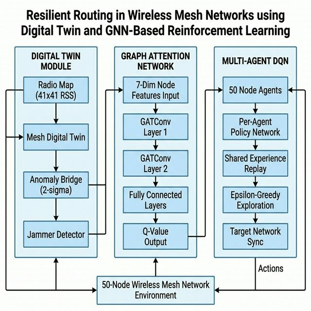
Figure 3.1: Overall system architecture of the MA DT-GCN framework showing the interaction between the Digital Twin, Graph Attention Network, and Multi-Agent DQN components
The Digital Twin module is the environmental awareness layer of the framework. It is implemented through three primary components: the Mesh Digital Twin, the Anomaly Bridge, and the Jammer Detector.
The Mesh Digital Twin is the core component that maintains a virtual copy of the physical wireless mesh network. It takes the network topology (as a NetworkX graph with 50 nodes and 100 edges) and node positions (scaled to a 41×41 Digital Twin coordinate grid) as inputs.
The Digital Twin ingests environmental radio maps — 41×41 grid arrays of RSS values in dBm — and updates link-level quality metrics for all edges in the network. For each edge (u, v), the RSS values at both endpoint positions are averaged, and two transformations are applied:
RSS to Latency (Sigmoidal Transformation): Higher RSS values indicate better signal quality, which translates to lower latency. The transformation uses a sigmoid function:
where RSSref = −70 dBm is the reference signal level for normalization. This sigmoidal mapping captures the non-linear relationship between signal strength and link performance.
RSS to Capacity (Linear Normalization): Capacity is computed using a simpler linear mapping:
The updated latency and capacity values serve as edge weights in the network graph, directly influencing the shortest path computations used in the reward function and providing edge attributes for the GAT attention mechanism.
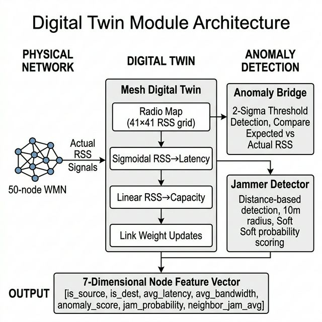
Figure 3.2: Digital Twin module architecture showing the data flow from radio maps through RSS-to-latency/capacity transformations and anomaly detection to the output feature vector
The Anomaly Bridge converts Digital Twin measurement differences into per-node anomaly scores. The DT dataset provides 25 measurement points per scenario, each with a difference value between the expected RSS (from the Digital Twin) and the actual measured RSS.
Training Phase: The Anomaly Bridge is trained on measurements from non-jammed (normal) scenarios. It computes the mean and standard deviation of absolute measurement differences across all normal samples and establishes a 2-sigma threshold:
This statistical threshold provides a baseline against which anomalous measurements can be identified without requiring labeled attack data — a key advantage for deployment in scenarios where attack data may not be available.
Scoring Phase: For each scenario, the absolute measurement differences are compared against the trained threshold. Scores are computed on a 0-to-1 scale, where 0 indicates normal behaviour and values approaching 1 indicate increasingly anomalous conditions. The scoring function uses a normalized scaling that maps differences above the mean to the [0, 1] range.
Spatial Mapping: The measurement point scores are mapped to mesh node scores using nearest-neighbour interpolation with distance-based decay. For each of the 50 mesh nodes, the nearest measurement point is identified, and its anomaly score is assigned to the node, weighted by an exponential decay factor based on the distance between the node and the measurement point.
The Jammer Detector provides per-node jamming probability estimates based on the distance to known jammer positions. It operates with a configurable jamming radius (default: 10 units in DT coordinates).
Hard Detection: Nodes within the jamming radius are classified as definitively jammed (probability = 1.0). This binary classification is used for tracking jammed steps during routing and for computing the jamming penalty in the reward function.
Soft Detection: Nodes beyond the jamming radius receive exponentially decaying jamming probabilities based on their distance from the nearest jammer. This soft scoring provides the routing agent with gradient information about proximity to jammed areas, enabling it to avoid regions that may be partially affected by jamming even if they are not within the direct jamming radius.
The Digital Twin module produces a comprehensive seven-dimensional feature vector for each node in the network:
| Index | Feature | Source | Description |
|---|---|---|---|
| 0 | is_source | Environment | 1.0 if node is current position of the packet, 0 otherwise |
| 1 | is_dest | Environment | 1.0 if node is the routing target, 0 otherwise |
| 2 | avg_latency | Digital Twin | Mean edge weight (latency) to all neighbour nodes |
| 3 | avg_bandwidth | Digital Twin | Mean edge capacity to all neighbour nodes |
| 4 | anomaly_score | Anomaly Bridge | Anomaly score from DT measurement differences (0–1) |
| 5 | jam_probability | Jammer Detector | Estimated jamming probability (0–1) |
| 6 | neighbor_jam_avg | Jammer Detector | Mean jamming probability across all neighbour nodes |
The first four features represent basic routing information (source/destination flags and link quality), while the last three features are Digital Twin-derived parameters that provide environmental awareness. The baseline GAT model uses only the first four features (with features 4–6 zeroed out), enabling a clean evaluation of the DT contribution.
The Graph Attention Network serves as the decision-making core of the framework, embedding the network topology and node features into a representation suitable for Q-value estimation.
The GAT_DTAware model consists of four layers:
| Layer | Type | Input Dim | Output Dim | Parameters |
|---|---|---|---|---|
| conv1 | GATConv | 7 | 16 | edge_dim=1 |
| conv2 | GATConv | 16 | 25 | edge_dim=1 |
| fc1 | Linear | 1,250 | 50 | — |
| fc2 | Linear | 50 | num_neighbors | — |
A key design decision is the integration of Digital Twin-derived edge weights into the GAT attention computation. By passing edge_attr (DT-computed latency values) to the GATConv layers, the attention mechanism can consider link quality when computing attention coefficients. This means that nodes with high-quality links (low latency, high capacity) can receive higher attention weights, while nodes with degraded links (due to jamming or interference) receive lower weights.
The edge attributes are computed for all edges in the graph, including reverse edges (since the graph is undirected). Each edge attribute is a single-dimensional value representing the DT-derived latency for that link. These attributes are recomputed on each environment reset when the Digital Twin updates link weights based on the current radio map scenario.
To ensure that the agent only selects valid actions (i.e., neighbours of the current node), the Q-value output is masked using a boolean mask tensor. Invalid actions (non-neighbours) have their Q-values set to negative infinity, ensuring that the argmax operation during exploitation always selects a valid neighbour.
The Multi-Agent system implements a cooperative routing strategy where each node in the network has its own independent DQN agent. This design mirrors the decentralized nature of WMN routing while enabling cooperative learning through shared experiences.
Each NodeAgent consists of:
In addition to per-agent replay buffers, the framework maintains a global SharedReplayMemory pool with a capacity of 50,000 transitions. All 50 agents contribute to this pool, and agents can draw from it to supplement their own experience data. The shared pool implements compatibility filtering — an agent can only sample transitions from the pool that were generated by agents with the same number of neighbours, ensuring action dimension consistency.
The sampling strategy blends per-agent and shared experiences: agents with sufficient own experience use 60% own transitions and 40% shared transitions in each training batch. Agents with insufficient own experience can bootstrap entirely from the shared pool, enabling faster initial learning.
Target networks are updated using soft updates (Polyak averaging) with a mixing coefficient τ = 0.005:
This gradual update prevents the sudden shifts in Q-value targets that can destabilize training. Soft updates are performed every 10 episodes for all agents simultaneously.
| Parameter | Single-Agent | Multi-Agent |
|---|---|---|
| Learning Rate | 0.001 | 0.001 |
| Discount Factor (γ) | 0.99 | 0.99 |
| Batch Size | 128 | 32 |
| Replay Memory Size | 5,000 | 20,000 per agent + 50,000 shared |
| Epsilon Start | 0.95 | 0.95 |
| Epsilon End | 0.001 | 0.001 |
| Epsilon Decay | 1,000 steps | 1,500 episodes |
| Target Update | Every 14,000 steps (hard copy) | Every 10 episodes (soft, τ=0.005) |
| Loss Function | Smooth L1 (Huber) Loss | |
| Gradient Clipping | Max norm = 1.0 | |
The reward function is a critical component that guides the agents toward optimal routing behaviour. It consists of four components that together balance routing efficiency with resilience to jamming attacks.
The base reward measures the agent's progress toward the destination using A* shortest path distances:
The base reward is multiplied by an anomaly dampening factor that reduces rewards for routing through nodes with high anomaly scores:
where α = 0.3 is the anomaly dampening coefficient. This soft penalty encourages agents to avoid anomalous areas while not completely prohibiting traversal when necessary.
A fixed negative reward is applied whenever the agent routes through a node identified as jammed:
where λ = 0.5 is the jamming penalty coefficient. This hard penalty directly discourages routing through known jammed regions.
An additional reward is granted when the agent successfully reaches the destination while avoiding all jammed nodes in the path:
| Parameter | Symbol | Value | Effect |
|---|---|---|---|
| Anomaly Dampening | α | 0.3 | Reduces reward in anomalous areas |
| Jamming Penalty | λ | 0.5 | Fixed penalty for jammed nodes |
| Resilience Bonus | — | 0.3 | Bonus for avoiding all jammed nodes |
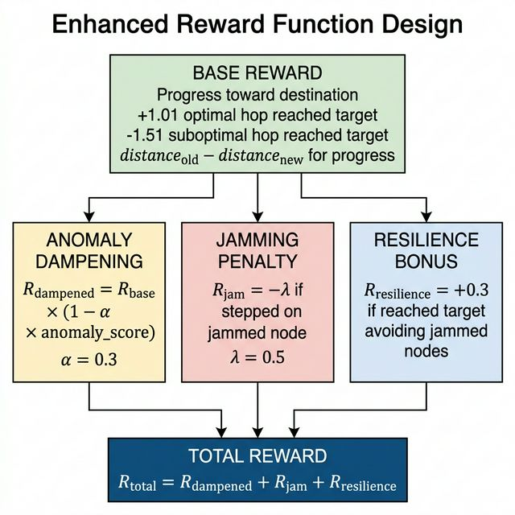
Figure 3.4: Enhanced reward function design showing the composition of base reward, anomaly dampening, jamming penalty, and resilience bonus
The complete training algorithm for the MA DT-GCN framework is described below. The algorithm integrates all the components described in the previous sections into a coherent training loop.
Algorithm: Resilient Routing with MA DT-GCN
This chapter describes the implementation details of the proposed MA DT-GCN framework. The implementation follows a modular architecture that separates concerns between data loading, digital twin processing, environment simulation, model definition, and training orchestration.
The framework is implemented in Python, leveraging several specialized libraries for deep learning, graph processing, and network simulation.
| Component | Technology | Purpose |
|---|---|---|
| Programming Language | Python 3.10+ | Core implementation |
| Deep Learning | PyTorch | Neural network training |
| Graph Neural Networks | PyTorch Geometric (PyG) | GATConv layers, graph data handling |
| Graph Processing | NetworkX | Network topology, shortest path |
| RL Environment | OpenAI Gym | Environment interface |
| Scientific Computing | NumPy | Array operations, radio maps |
| Data Analysis | Pandas | Metrics recording, CSV output |
| Visualization | Matplotlib | Training graphs, comparison plots |
| Topology Generation | BRITE | Network topology files |
| GPU Acceleration | CUDA | Optional GPU training |
The codebase is organized into a hierarchical module structure under the integrated_dt_gcn package. Each module encapsulates a specific aspect of the framework.
The configuration module (config.py) centralizes all hyperparameters and system settings. This includes device configuration (automatic GPU detection), file paths, network parameters (50 nodes, 100 edges), feature dimensions (7), RSS thresholds, reward parameters, and training hyperparameters for both single-agent and multi-agent modes. Centralizing configuration ensures consistency across all modules and simplifies experimentation with different parameter settings.
Two data loaders handle the input data for the framework:
The BRITELoader parses the 50nodes.brite topology file generated by the BRITE topology generator. It extracts node positions and edge connections from the BRITE format, creates a NetworkX graph with weight and capacity attributes for each edge, and provides coordinate scaling from BRITE coordinates (0–99) to Digital Twin coordinates (0–40) using a scale factor of 0.4.
The DTDatasetLoader loads the Digital Twin datasets stored as pickle files. It handles three types of dataset files: radio map datasets (fspl_RMdataset{N}.pkl) containing 30,000 radio map scenarios each, measurement datasets (fspl_measurements{N}.pkl) with measurement differences and jammer labels, and path loss map datasets (fspl_PLdataset{N}.pkl). The loader provides methods for filtering jammed and normal scenarios, extracting radio map arrays, obtaining jammer positions, and retrieving measurement differences and coordinates.
The digital_twin subpackage contains the MeshDigitalTwin class (mesh_twin.py) which manages the virtual network replica and updates link weights based on radio map data, and the AnomalyBridge and JammerDetector classes (anomaly_bridge.py) which handle anomaly scoring and jammer detection respectively. These modules process raw DT data into the environmental features that enrich the node feature vectors.
The environment subpackage contains the HybridEnv class (hybrid_env.py) which implements the OpenAI Gym interface for the routing environment. It integrates the BRITE topology, DT radio maps, anomaly scores, and jammer information into a unified simulation environment. The enhanced_reward.py module implements the multi-component reward function with base reward, anomaly dampening, jamming penalty, and resilience bonus.
The models subpackage contains the neural network architectures and RL agent implementations. The gat_dt_aware.py module defines the GAT_DTAware model (the GAT architecture with edge attribute support) and the GAT_DTAgent class (single-agent DQN wrapper). The multi_agent.py module defines the NodeAgent class (per-node DQN agent), SharedReplayMemory class (global experience pool), and MultiAgentCoordinator class (orchestrator for all 50 agents).
The data pipeline transforms raw input data through several stages before it reaches the learning agents:
The HybridEnv class provides the standard Gym interface (reset, step) for agent interaction. The observation space consists of multi-discrete values for source and target nodes, while the action space is discrete with size equal to the number of network nodes. The environment manages the routing simulation, including source/target selection, path tracking, jammed node identification, and step validation.
A key feature of the environment is its scenario selection mechanism. On each episode reset, the environment randomly selects either a jammed or normal scenario with equal probability. This ensures that the agents are exposed to both types of conditions during training, learning to route effectively in both normal and adversarial environments. When a jammed scenario is selected, jammer positions are used to compute which nodes are within the jamming radius, and these nodes are tagged for use in the reward function.
The training pipeline is orchestrated through two main scripts: train_integrated.py for single-agent training, and train_multi_agent.py for multi-agent training. A third script, compare_models.py, runs both models sequentially on the same environment and produces comparative analysis.
The training pipeline includes comprehensive metrics tracking covering episode-level metrics (total reward, path length, jammed steps, success/failure, total latency, average bandwidth, average PDR) and step-level metrics (per-step loss, latency, bandwidth). All metrics are saved to CSV files for post-training analysis, and summary statistics are appended to a running log file for tracking progress across experiments.
Reproducibility is ensured through the --seed command-line argument, which sets random seeds for Python's random module, NumPy, and PyTorch (including CUDA if available). The default seed is 42, and all experiments reported in this dissertation use this seed.
This chapter presents the experimental evaluation of the proposed MA DT-GCN framework. The experiments compare the Multi-Agent GAT+DT model against a single-agent GAT Baseline to quantify the impact of Digital Twin integration and multi-agent coordination on routing performance in adversarial wireless mesh network environments.
The experiments are conducted on a 50-node wireless mesh network with 100 bidirectional edges, generated using the BRITE topology generator with the Barabási-Albert model. The network topology is fixed across all experiments to ensure fair comparison between models.
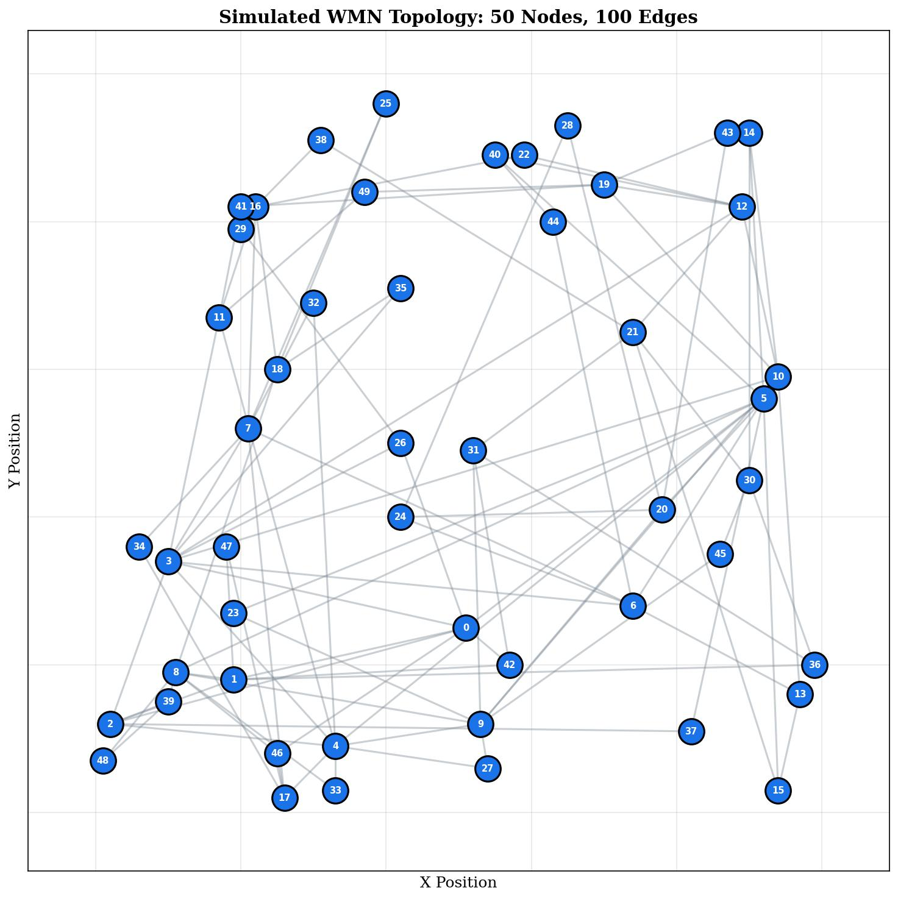
Figure 5.1: Simulated 50-node WMN topology generated using BRITE showing node positions and edge connections
The Digital Twin dataset (dataset_nr=0) provides 30,000 radio map scenarios. Approximately 50% of scenarios include one or more active jammers. The anomaly bridge is trained on 2,000 normal (non-jammed) measurement samples. The radio map grid resolution is 41×41 pixels, corresponding to a physical area with measurement spacing of approximately 10 meters.
Two models are compared in the experiments:
Both models are trained for 3,000 episodes with random seed 42 for reproducibility. On each episode, a random scenario is selected (50% probability of jammed vs. normal conditions), and random source-target pairs are chosen. The maximum steps per episode is 10× the number of nodes (500 steps). All experiments are run on the same machine and environment to ensure fair comparison.
The following metrics are used to evaluate and compare the models:
| Metric | MA GAT+DT | GAT Baseline | Improvement |
|---|---|---|---|
| Average Reward | 0.93 | −17.78 | +18.71 |
| Success Rate | 100% | 93% | +7 pp |
| Average Path Length | 3.67 hops | 50.85 hops | −47.18 hops |
| Average Jammed Steps | 0.29 | 1.25 | −0.96 (76.8% reduction) |
| Training Time | 35.51 min | 75.21 min | 52.8% faster |
| Average PDR | 100% | 100% | — |
Figure 5.2 presents the reward convergence curves for both models over 3,000 training episodes, smoothed using a 50-episode moving average to reveal underlying trends.
The MA GAT+DT model demonstrates significantly faster convergence and higher final reward values compared to the GAT Baseline. The multi-agent model begins generating positive rewards within the first few hundred episodes, indicating that the combination of distributed decision-making and DT-enriched features enables rapid learning of effective routing strategies.
In contrast, the GAT Baseline model exhibits much slower convergence and consistently lower rewards throughout training. Without Digital Twin awareness of jamming and anomalies, the baseline agent frequently routes through jammed areas, incurring penalties, and takes substantially longer paths due to the lack of environmental context in its decision-making.
The stability of the MA GAT+DT reward curve (low variance in the moving average) indicates that the multi-agent coordination and shared experience replay effectively prevent the catastrophic forgetting and policy oscillation that often plague multi-agent RL systems.
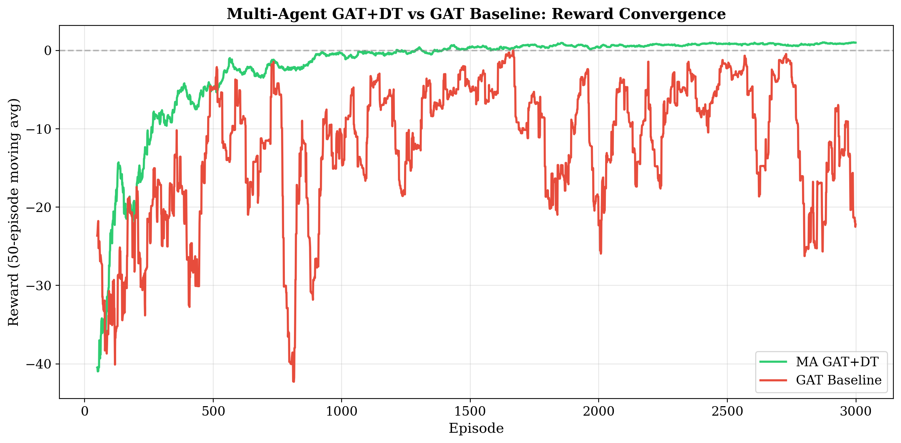
Figure 5.2: Reward convergence comparison between MA GAT+DT (green) and GAT Baseline (red) over 3,000 training episodes, shown as 50-episode moving averages
The path length metric measures the number of hops taken by the agent to reach the destination node. Shorter paths indicate more efficient routing decisions.
As shown in Figure 5.3, the MA GAT+DT model achieves dramatically shorter paths compared to the baseline. The proposed model converges to an average path length of 3.67 hops, compared to the baseline's 50.85 hops — a reduction of over 92%. This improvement demonstrates the effectiveness of the Digital Twin features in providing the agent with the environmental awareness needed to make efficient routing decisions.
The baseline's high average path length indicates that without DT features, the agent struggles to find direct routes, often wandering through the network before reaching the destination. The multi-agent architecture, where each node makes an informed local decision, enables more efficient hop-by-hop routing compared to the single-agent approach that must make all routing decisions from a single centralized perspective.
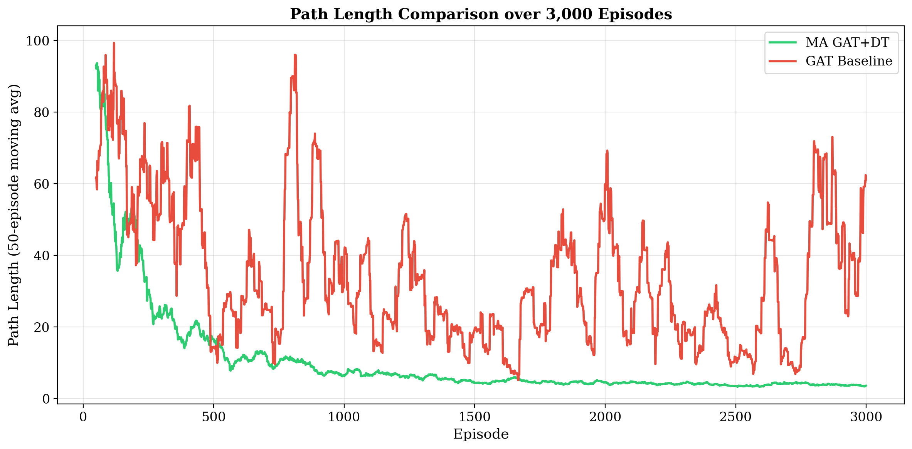
Figure 5.3: Path length comparison between MA GAT+DT and GAT Baseline over 3,000 episodes, showing 50-episode moving averages
The number of jammed steps per episode directly measures the agent's ability to avoid jammed nodes during routing. Each jammed step incurs a penalty of λ = 0.5 in the reward function and indicates that the packet was routed through a compromised node.
Figure 5.4 shows that the MA GAT+DT model significantly reduces the number of jammed steps compared to the baseline. The proposed model averages only 0.29 jammed steps per episode, compared to 1.25 for the baseline — a reduction of 76.8%.
This improvement is directly attributable to the Digital Twin integration. The anomaly scores and jamming probability features (dimensions 4–6 of the node feature vector) provide the GAT attention mechanism with real-time information about which nodes and links are affected by jamming. The multi-agent architecture further enhances this avoidance capability, as each node agent can independently assess its local jamming risk and route traffic accordingly.
The baseline model, which has its DT features zeroed out, can only learn to avoid jammed areas through trial-and-error — discovering jammed nodes after routing through them and incurring penalties. This reactive approach is inherently less effective than the proactive avoidance enabled by DT awareness.
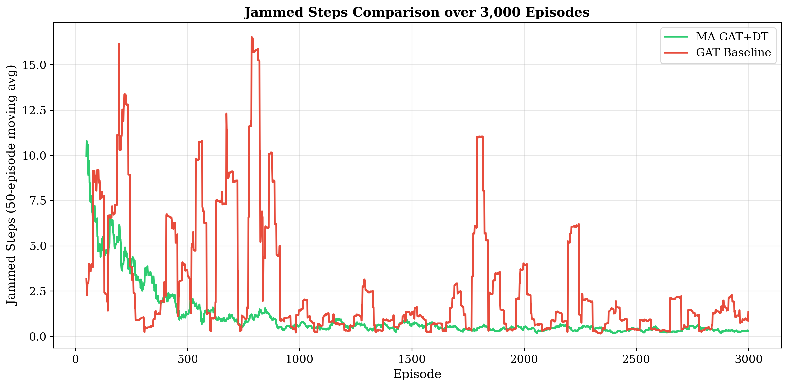
Figure 5.4: Jammed steps comparison between MA GAT+DT and GAT Baseline over 3,000 episodes, showing 50-episode moving averages
An important practical consideration is the training time required for each model to converge to effective routing policies. Figure 5.5 shows the total training time for both models over 3,000 episodes.
The MA GAT+DT model completes training in 35.51 minutes, while the GAT Baseline requires 75.21 minutes — the proposed model is 52.8% faster. This may seem counterintuitive given that the multi-agent model has 50 independent agents, each with its own policy and target networks. However, several factors contribute to the faster training:
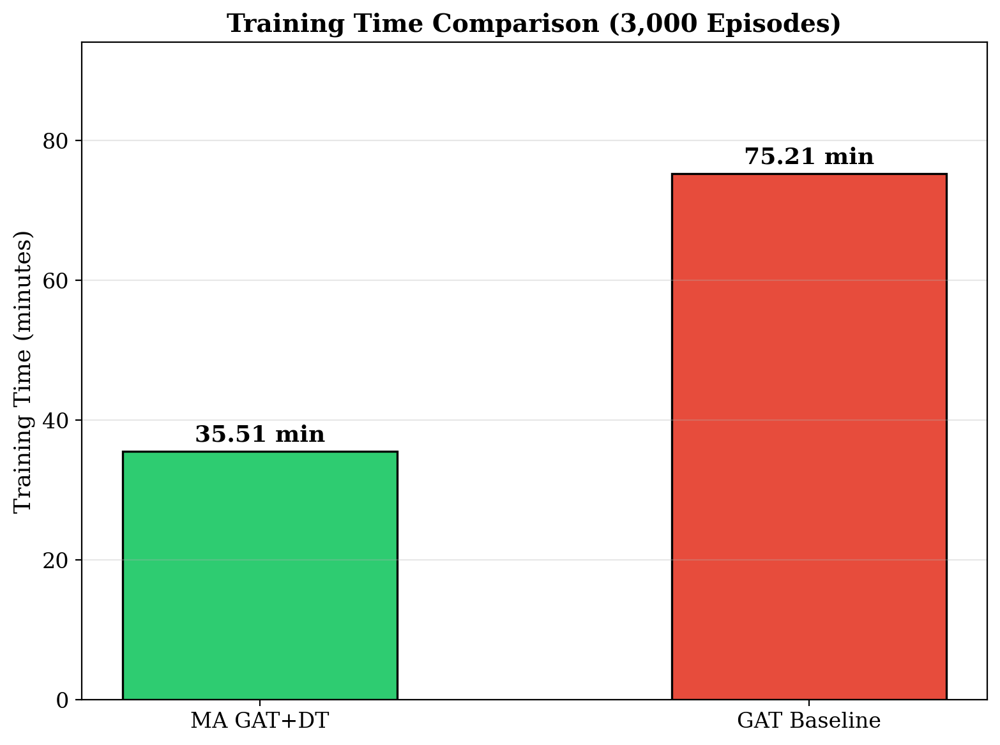
Figure 5.5: Training time comparison between MA GAT+DT and GAT Baseline for 3,000 episodes
The success rate measures the percentage of episodes in which the agent successfully routes the packet from source to destination within the maximum step limit. Figure 5.6 shows the success rate comparison alongside the Packet Delivery Ratio (PDR).
The MA GAT+DT model achieves a perfect 100% success rate, while the GAT Baseline achieves 93%. The 7 percentage point improvement demonstrates that the combination of Digital Twin awareness and multi-agent coordination not only improves routing efficiency but also improves routing reliability — the agent never fails to deliver a packet when equipped with environmental awareness.
Both models achieve 100% PDR for successfully delivered packets, indicating that once a route is found, packets are delivered without loss. The difference lies in whether a route can be found within the step limit — some source-target pairs in adversarial conditions are challenging for the baseline to route without DT guidance.
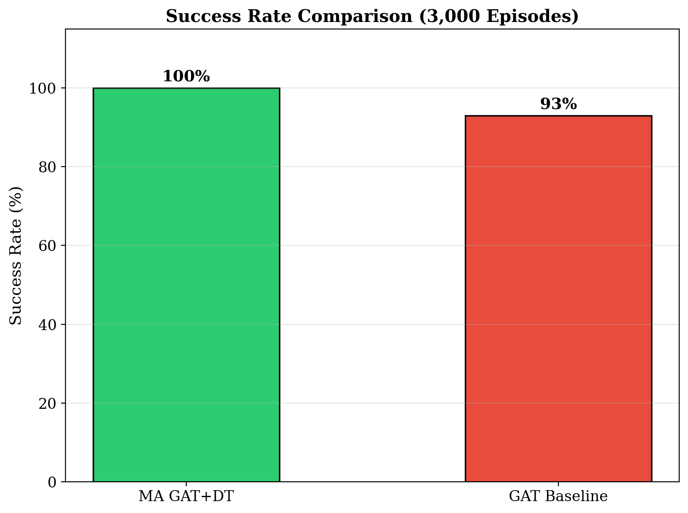
Figure 5.6: Success rate and PDR comparison between MA GAT+DT and GAT Baseline
The experimental results comprehensively validate the proposed MA DT-GCN framework across all evaluated metrics. Table 5.2 provides a detailed summary of the improvements achieved by the MA GAT+DT model over the GAT Baseline.
| Category | Metric | MA GAT+DT | GAT Baseline | Change |
|---|---|---|---|---|
| Routing Quality | Average Reward | 0.93 | −17.78 | +18.71 |
| Average Path Length | 3.67 | 50.85 | −92.8% | |
| Resilience | Jammed Steps | 0.29 | 1.25 | −76.8% |
| Success Rate | 100% | 93% | +7 pp | |
| Efficiency | Training Time | 35.51 min | 75.21 min | −52.8% |
| Reliability | PDR | 100% | 100% | — |
The key findings from the experimental evaluation are:
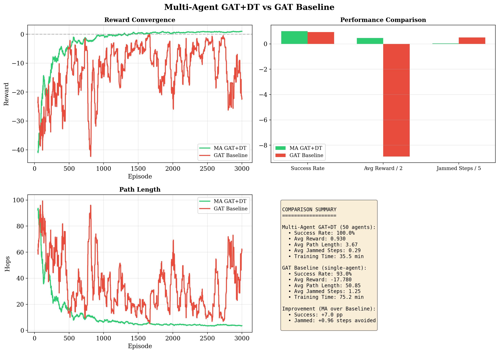
Figure 5.7: Combined comparison results summary showing reward convergence, performance metrics, training loss, and summary statistics
This dissertation presented a novel framework for resilient routing in Wireless Mesh Networks that integrates Digital Twin modelling, Graph Attention Networks, and Multi-Agent Deep Q-Networks. The proposed MA DT-GCN framework addresses critical gaps in existing research by combining environmental awareness (through Digital Twin integration), topology-aware decision-making (through GAT-based state representation), and distributed routing (through multi-agent coordination).
The key contributions of this work are:
1. Digital Twin Integration for Routing: The framework demonstrates, for the first time, the effective integration of Digital Twin-derived environmental features into a GNN-based routing agent. The seven-dimensional node feature vector — combining routing state flags, DT-derived link quality metrics, anomaly scores, and jamming probabilities — provides agents with comprehensive environmental awareness that enables proactive jamming avoidance rather than reactive route recovery.
2. Attention-Based Link Quality Assessment: The GAT architecture with edge attribute support enables the attention mechanism to consider link quality (DT-derived latency) when computing attention coefficients. This allows the model to selectively focus on high-quality, non-jammed links during routing decisions, addressing the limitation of GCN-based approaches that treat all neighbour contributions equally.
3. Multi-Agent Cooperative Routing: The framework implements 50 independent agents with shared experience replay, enabling distributed decision-making that mirrors the decentralized nature of WMN routing. The shared experience pool with compatibility filtering provides cooperative learning benefits while maintaining independent agent policies.
4. Enhanced Reward Function: The multi-component reward function successfully balances routing efficiency with resilience objectives through anomaly dampening, jamming penalties, and resilience bonuses. This reward design enables agents to learn routes that are not only short but also avoid compromised network segments.
Experimental evaluation on a 50-node wireless mesh network over 3,000 training episodes demonstrates that the proposed MA GAT+DT model achieves an average reward of 0.93 (compared to the baseline's −17.78), reduces average path length by 92.8% (from 50.85 to 3.67 hops), decreases jammed steps by 76.8% (from 1.25 to 0.29), achieves 100% success rate (compared to 93% for the baseline), and trains 52.8% faster despite having 50 independent agents.
These results validate the central thesis of this dissertation: that routing the Digital Twin's environmental awareness through the attention mechanism of a GAT-based multi-agent RL system enables WMNs to build genuine resilience against jamming attacks — one where interference is anticipated and routed around before packet loss has a chance to escalate.
While the proposed framework demonstrates significant improvements in resilient routing, several directions for future work can further enhance and extend the system:
1. Dynamic Topology Support: The current framework operates on a fixed 50-node topology. Extending the framework to handle dynamic topologies where nodes can join, leave, or move would make it more applicable to real-world scenarios such as mobile ad-hoc networks and disaster response networks. This would require online adaptation of the GAT model to changing graph structures.
2. Real-Time Digital Twin Updates: The current implementation uses pre-generated radio maps from the Digital Twin dataset. Integrating real-time radio measurements from physical network deployments would enable true closed-loop Digital Twin operation, where the virtual replica is continuously synchronized with the physical network.
3. Advanced Jamming Models: The current jammer model uses a simple distance-based detection with fixed radius. Incorporating more sophisticated jamming models — including reactive jammers, smart jammers that adapt to the routing protocol, and mobile jammers — would provide a more realistic testbed for evaluating the framework's resilience.
4. Scalability Evaluation: Evaluating the framework on larger network topologies (100, 200, 500 nodes) would help understand how the multi-agent approach scales with network size. Parameter sharing techniques or hierarchical agent architectures may be needed for very large networks.
5. Transfer Learning: Investigating the transferability of learned policies across different network topologies and jamming scenarios would enable faster deployment in new environments without full retraining. The GAT architecture's permutation invariance provides a natural foundation for topology transfer.
6. Multi-Objective Optimization: Extending the reward function to explicitly optimize for multiple objectives (latency, bandwidth, energy efficiency, security) using techniques like Pareto-optimal policy search would enable the framework to address more complex QoS requirements.
7. Hardware Testbed Validation: Deploying and evaluating the framework on a physical wireless mesh network testbed would validate the simulation results and identify practical challenges in real-world deployment, including communication overhead, computational constraints on node hardware, and the impact of real-world wireless channel conditions.
8. Partial Observability: Implementing true partial observability where each agent only has access to local neighbourhood information (rather than the full global graph) would more accurately model the decentralized nature of WMN routing and could potentially improve scalability.
[1] S. S. Bhavanasi, L. Pappone, and F. Esposito, "Dealing with Changes: Resilient Routing via Graph Neural Networks and Multi-Agent Deep Reinforcement Learning," submitted to IEEE Transactions on Network and Service Management (TNSM), Special Issue on Reliable Networks, 2023.
[2] A. Krause, M. D. Khursheed, P. Schulz, F. Burmeister, and G. Fettweis, "Digital Twin of the Radio Environment: A Novel Approach for Anomaly Detection in Wireless Networks," in Proceedings of 2023 IEEE Globecom Workshops: 3rd Workshop on Sustainable and Resilient Industrial Networks (GC 2023 Workshop - SRINetworks), Kuala Lumpur, Malaysia, Dec. 2023.
[3] V. Mnih, K. Kavukcuoglu, D. Silver, A. A. Rusu, J. Veness, M. G. Bellemare, A. Graves, M. Riedmiller, A. K. Fidjeland, G. Ostrovski, S. Petersen, C. Beattie, A. Sadik, I. Antonoglou, H. King, D. Kumaran, D. Wierstra, S. Legg, and D. Hassabis, "Human-level control through deep reinforcement learning," Nature, vol. 518, no. 7540, pp. 529–533, Feb. 2015.
[4] T. N. Kipf and M. Welling, "Semi-Supervised Classification with Graph Convolutional Networks," in Proceedings of the 5th International Conference on Learning Representations (ICLR), Toulon, France, Apr. 2017.
[5] P. Veličković, G. Cucurull, A. Casanova, A. Romero, P. Liò, and Y. Bengio, "Graph Attention Networks," in Proceedings of the 6th International Conference on Learning Representations (ICLR), Vancouver, Canada, Apr. 2018.
[6] Z. Jin, Y. Wang, X. Li, and H. Chen, "Deep Reinforcement Learning-based Resilient Routing for Urban Emergency Communication Networks," IEEE Transactions on Vehicular Technology, vol. 74, no. 1, pp. 15–28, 2025.
[7] R. S. Sutton and A. G. Barto, Reinforcement Learning: An Introduction, 2nd ed. Cambridge, MA: MIT Press, 2018.
[8] Z. Wu, S. Pan, F. Chen, G. Long, C. Zhang, and P. S. Yu, "A Comprehensive Survey on Graph Neural Networks," IEEE Transactions on Neural Networks and Learning Systems, vol. 32, no. 1, pp. 4–24, Jan. 2021.
[9] M. M. Olsson, R. Barr, R. Hague, C. Sherburn, and J. Li, "Digital Twin Technology: An Overview," Annals of the CIRP, vol. 69, no. 1, pp. 629–642, 2020.
[10] L. Busoniu, R. Babuska, and B. De Schutter, "A Comprehensive Survey of Multiagent Reinforcement Learning," IEEE Transactions on Systems, Man, and Cybernetics, Part C, vol. 38, no. 2, pp. 156–172, Mar. 2008.
[11] I. F. Akyildiz, X. Wang, and W. Wang, "Wireless mesh networks: a survey," Computer Networks, vol. 47, no. 4, pp. 445–487, Mar. 2005.
[12] W. Xu, W. Trappe, Y. Zhang, and T. Wood, "The Feasibility of Launching and Detecting Jamming Attacks in Wireless Networks," in Proceedings of ACM MobiHoc, Urbana-Champaign, IL, USA, May 2005, pp. 46–57.
[13] A. Medina, A. Lakhina, I. Matta, and J. Byers, "BRITE: An Approach to Universal Topology Generation," in Proceedings of the Ninth International Symposium on Modeling, Analysis and Simulation of Computer and Telecommunication Systems (MASCOTS), Cincinnati, OH, USA, Aug. 2001.
[14] M. Fey and J. E. Lenssen, "Fast Graph Representation Learning with PyTorch Geometric," in ICLR Workshop on Representation Learning on Graphs and Manifolds, 2019.
[15] A. Paszke, S. Gross, F. Massa, A. Lerer, J. Bradbury, G. Chanan, T. Killeen, Z. Lin, N. Gimelshein, L. Antiga, A. Desmaison, A. Kopf, E. Yang, Z. DeVito, M. Raison, A. Tejani, S. Chilamkurthy, B. Steiner, L. Fang, J. Bai, and S. Chintala, "PyTorch: An Imperative Style, High-Performance Deep Learning Library," in Advances in Neural Information Processing Systems (NeurIPS), vol. 32, 2019.
[16] G. Brockman, V. Cheung, L. Pettersson, J. Schneider, J. Schulman, J. Tang, and W. Zaremba, "OpenAI Gym," arXiv preprint arXiv:1606.01540, 2016.
[17] H. Van Hasselt, A. Guez, and D. Silver, "Deep Reinforcement Learning with Double Q-learning," in Proceedings of the AAAI Conference on Artificial Intelligence, vol. 30, no. 1, Phoenix, AZ, USA, Feb. 2016.
[18] A. Hagberg, P. Swart, and D. S Chult, "Exploring network structure, dynamics, and function using NetworkX," in Proceedings of the 7th Python in Science Conference (SciPy), Pasadena, CA, USA, 2008, pp. 11–15.
[19] Z. Wang, T. Schaul, M. Hessel, H. Van Hasselt, M. Lanctot, and N. De Freitas, "Dueling Network Architectures for Deep Reinforcement Learning," in Proceedings of the 33rd International Conference on Machine Learning (ICML), New York, NY, USA, Jun. 2016.
[20] T. Schaul, J. Quan, I. Antonoglou, and D. Silver, "Prioritized Experience Replay," in Proceedings of the 4th International Conference on Learning Representations (ICLR), San Juan, Puerto Rico, May 2016.
[21] D. P. Kingma and J. Ba, "Adam: A Method for Stochastic Optimization," in Proceedings of the 3rd International Conference on Learning Representations (ICLR), San Diego, CA, USA, May 2015.
[22] M. Grondman, L. Busoniu, G. A. D. Lopes, and R. Babuska, "A Survey of Actor-Critic Reinforcement Learning: Standard and Natural Policy Gradients," IEEE Transactions on Systems, Man, and Cybernetics, Part C, vol. 42, no. 6, pp. 1291–1307, Nov. 2012.
[23] A. Albert and A. Barabási, "Statistical mechanics of complex networks," Reviews of Modern Physics, vol. 74, no. 1, pp. 47–97, Jan. 2002.
[24] C. Perkins, E. Belding-Royer, and S. Das, "Ad hoc On-Demand Distance Vector (AODV) Routing," IETF RFC 3561, Jul. 2003.
[25] T. Clausen and P. Jacquet, "Optimized Link State Routing Protocol (OLSR)," IETF RFC 3626, Oct. 2003.